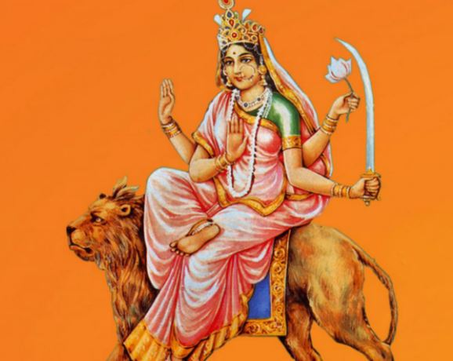

Durga Puja
Day 6

Katyayani is one of the main forms of The Hindu Mother Goddess, Devi. She is seen as the slayer of the tyrannical demon Mahishasura.
She is also the sixth form amongst Navadurga or the nine forms of Hindu goddess Durga (Parvati), worshipped during the Navratri celebrations.
She may be depicted with four, ten, or eighteen hands. This is the second name given for Goddess Adi Parashakti in Amarakosha, the Sanskrit lexicon
(Goddess Parvati names- Uma Katyayani Gauri Kali Haimavati Ishwari). Goddess Katyayani was worshipped by Sita, Radha and Rukmini for a good husband.
Affiliation: Avatar of Parvati
Planet: Jupiter
Mantra: चंद्रहासोज्जवलकरा शार्दूलवरवाहना। कात्यायनी शुभं दध्यादेवी दानवघातिनि।।
Weapon: Khadga (longsword) Padma or Lotus, Abhayamudra, Varadamudra
Mount: Lion